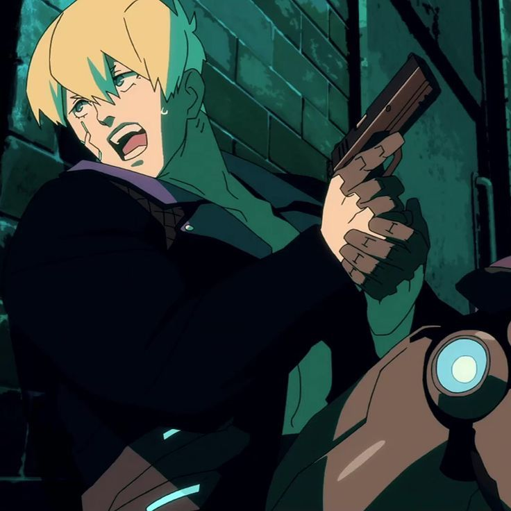
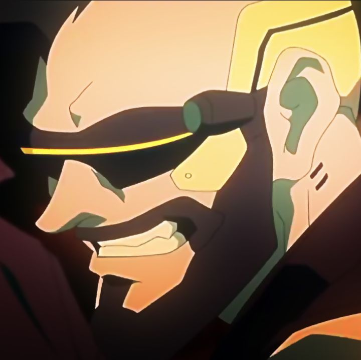
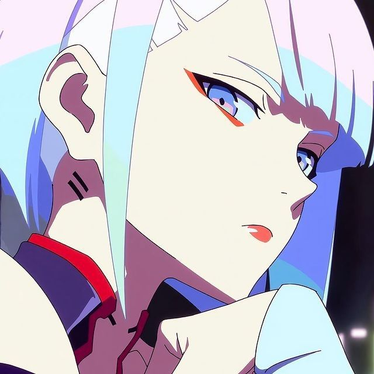
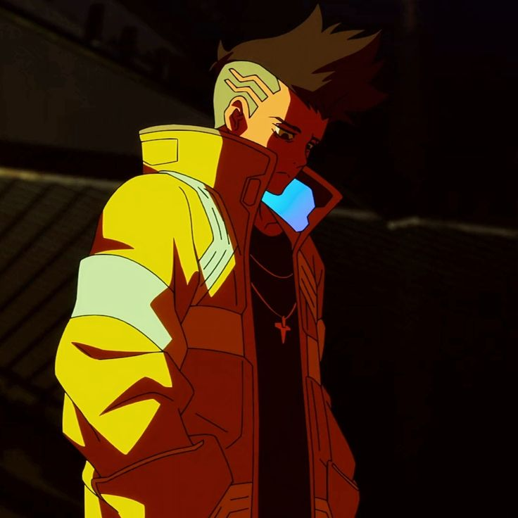
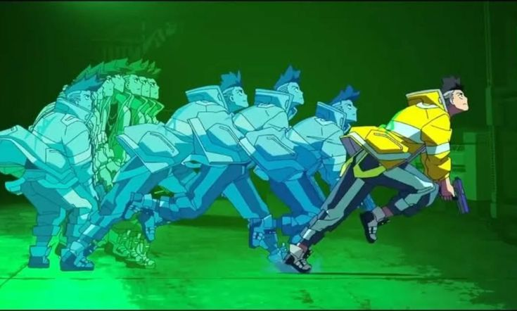

RESUMO OPERACIONAL
A história de Cyberpunk: Edgerunners não é sobre triunfo, mas sobre o desespero de um jovem que tenta honrar o desejo de sua mãe em uma cidade que lucra com a pobreza. David Martinez, após perder Gloria, sua única âncora no mundo, descobre que a única forma de não ser esmagado é tornar-se mais forte — e menos humano.
"Em Night City, você morre como um ninguém ou vive o suficiente para ver o cromo te consumir."

ARQUIVOS DE PERSONAGENS

Maine
STATUS: FALECIDO // CAUSA: CIBERPSICOSE
Líder do grupo e mentor de David. Um mercenário que acreditava que quanto mais cromo, melhor. Seu declínio mental serviu como o primeiro grande aviso para David sobre os limites do corpo humano.

Dorio
STATUS: FALECIDA // CAUSA: COMBATE
A força e a voz da razão. Braço direito de Maine, Dorio era a estabilidade do grupo. Sua lealdade a Maine, mesmo diante da loucura dele, custou sua vida no cerco da NCPD.

Gloria Martinez
STATUS: FALECIDA // CAUSA: NEGLIGÊNCIA MÉDICA
Trabalhava exaustivamente como paramédica para pagar os estudos de David. Sua morte trágica em um acidente, seguida pela recusa de atendimento por falta de seguro, é o catalisador da história.

Pillar
STATUS: FALECIDO // CAUSA: CIBERPSICOPATA
O técnico irreverente e irmão de Rebecca. Conhecido por suas mãos cibernéticas longas e humor ácido. Foi a primeira baixa inesperada da equipe principal nas mãos de um desconhecido.

Lucy
STATUS: ATIVA // LOCALIZAÇÃO: LUA
Netrunner com um passado traumático na Arasaka. Buscou em David uma conexão real e sonhou com a Lua para escapar do sufocamento de Night City.

Rebecca
STATUS: FALECIDA // CAUSA: ADAM SMASHER
A alma do grupo após a morte de Pillar. Rebecca demonstrou uma lealdade inabalável a David, aceitando seu destino ao lado dele até o último segundo.
ANATOMIA VISUAL DO STUDIO TRIGGER
Saturação e Psicologia
O Studio Trigger abandonou o tom "sujo e cinzento" do cyberpunk clássico em favor de uma saturação fluorescente. O uso de cores primárias não é apenas decorativo:
- Amarelo Vibrante: Identidade de David, simbolizando energia juvenil e uma "chama que queima o dobro da intensidade".
- Azul Neon e Magenta: Representam a artificialidade da cidade e a vida de Netrunner (Lucy).
- Vermelho Sangue: Utilizado em flashes rápidos durante cenas de violência para enfatizar o choque e a perda de controlo.


A Cinética da Ciberpsicose
A estética traduz a desconexão neurológica através de técnicas de animação experimental:
- After-Images (Rastros): Representam a velocidade do Sandevistan, mas também como a percepção do tempo de David se fragmenta.
- Quadros Sobrepostos: Durante surtos de ciberpsicose, a imagem "treme" e sobrepõe cenas passadas, simulando um erro de processamento no cérebro cibernético.
- HUD Diegético: Os menus de chamada e mira não são para o espectador, eles fazem parte da visão dos personagens, reforçando que eles nunca estão "desconectados".
O Ciclo de
Descartabilidade
A Pobreza como Sentença
David Martinez começa como um "outsider" na escola de elite. Ele sofre bullying não por falta de inteligência, mas por sua roupa velha e software desatualizado. Em Night City, se você não pode pagar pela atualização, você é invisível ou um alvo.
O Trauma do Capital
A cena em que Gloria é deixada na estrada porque a ambulância da Trauma Team prioriza um cliente corporativo é a crítica mais pesada do anime. A vida humana é uma variável de custo. David é forçado ao crime não por maldade, mas porque o sistema fechou todas as portas legítimas.
A Evolução do Sofrimento
1. Escassez: Incapacidade de pagar por updates básicos de lavandaria ou educação.
2. Negligência: Perda da família devido à falta de seguro saúde.
3. Alienação: Substituição do próprio corpo por máquinas para tentar "pertencer" ou ser útil.
4. Autodestruição: O colapso final onde o indivíduo se torna a arma que o sistema usa e descarta.